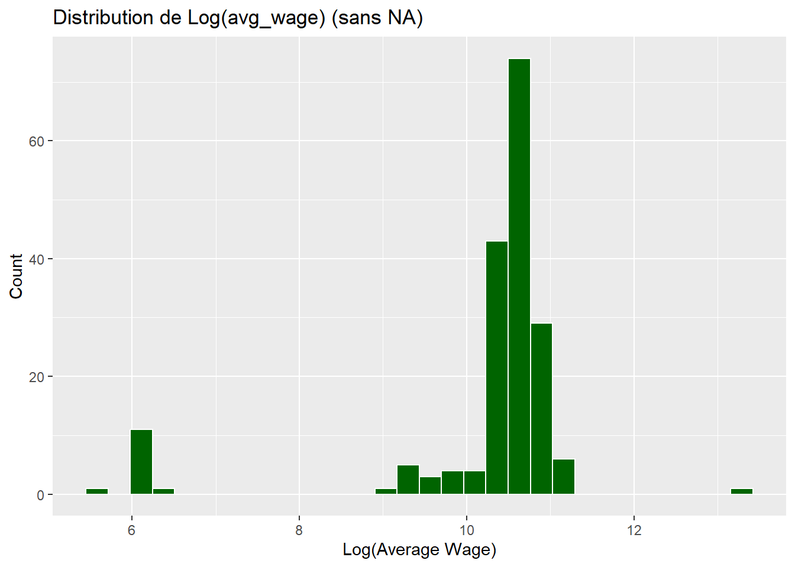
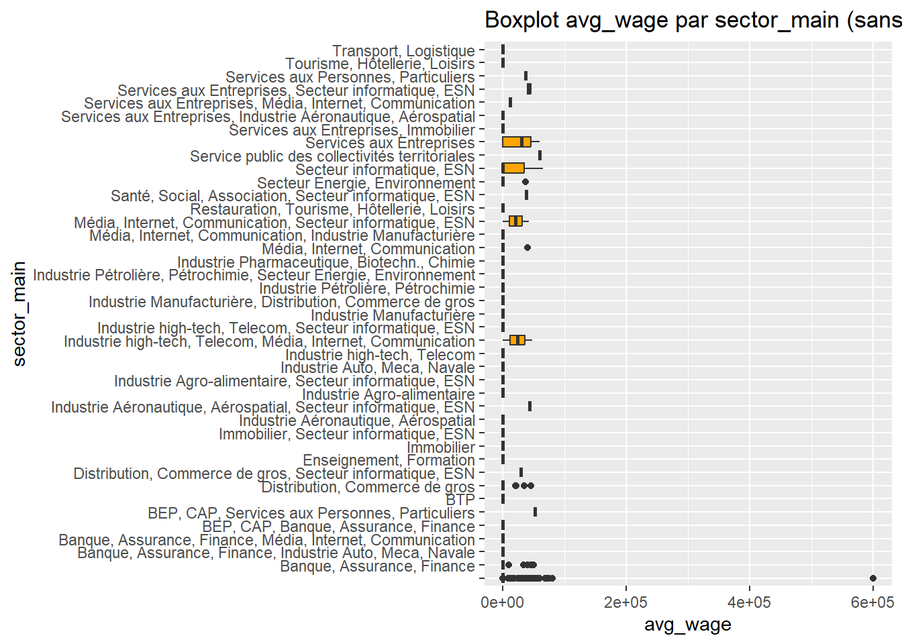
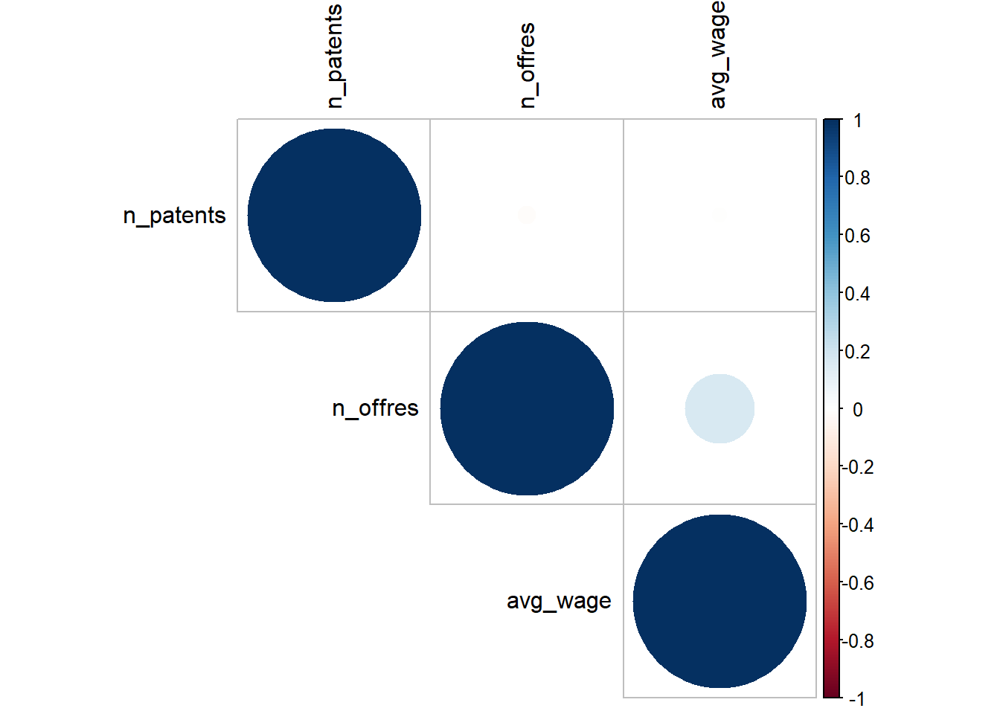
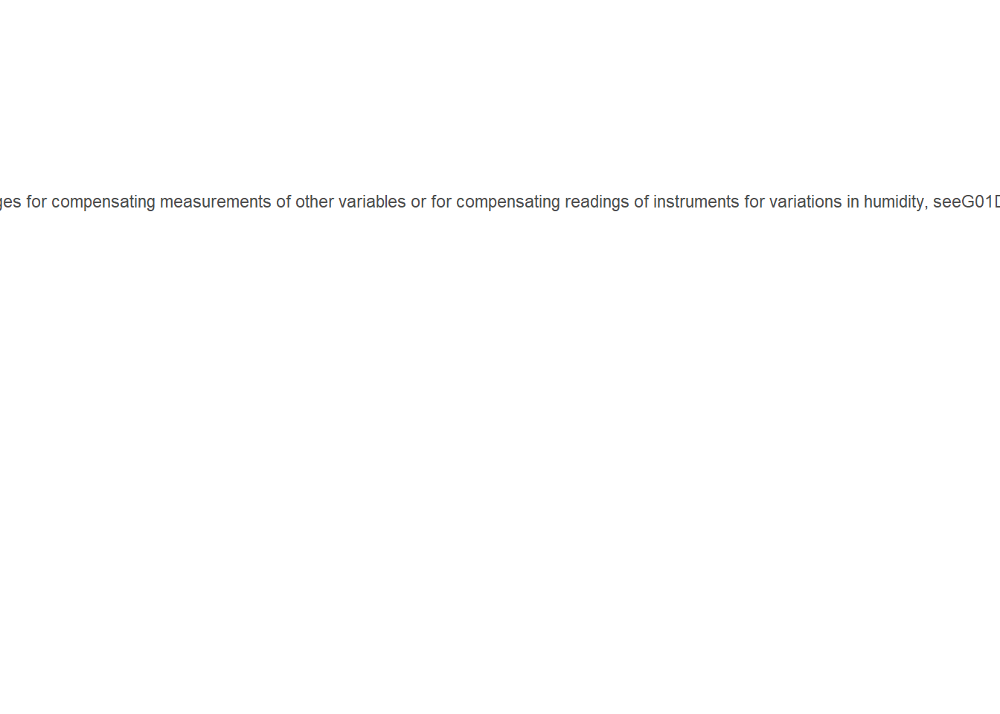
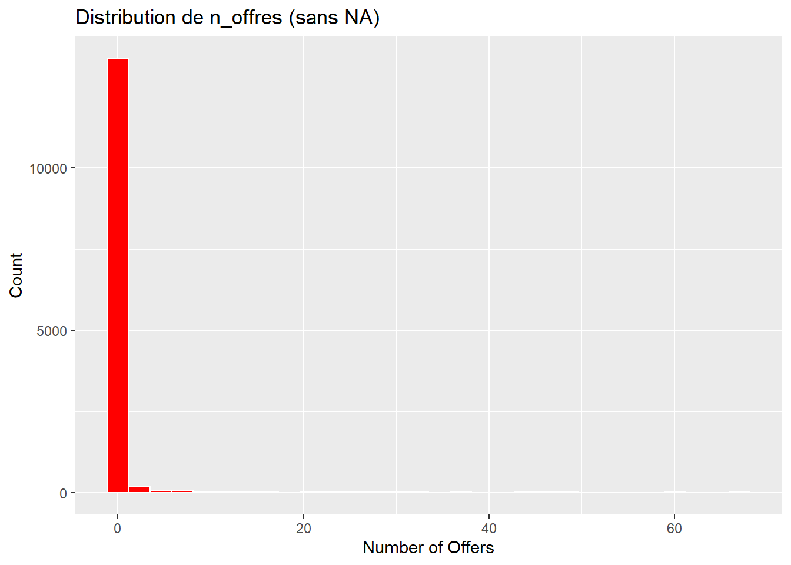

n_patentsavg_wage (log-transformé)avg_wage par sector_mainn_patentsn_patents,
n_offres, avg_wagen_patents ~ avg_wagen_offres ~ n_patentsavg_wageipc_main_desc par fréquencen_offresDans cette section, nous présentons les 10 analyses les plus
significatives sur la base de données base_emp_inno. Les
lignes contenant des valeurs manquantes (NA) dans les
variables utilisées sont exclues avant de réaliser le calcul.
n_patents| Min | Median | Mean | Max | SD |
|---|---|---|---|---|
| 0 | 4 | 26.15293 | 14788 | 265.6242 |
avg_wage (log-transformé)
avg_wage par
sector_main
n_patents| firm_name | n_patents | avg_wage | n_offres |
|---|---|---|---|
| commissariatlnergieatomiqueetauxnergiesalternatives | 14788 | 0 | 0 |
| alcatellucent | 10640 | 0 | 0 |
| centrenationaldelarecherchescientifique | 9361 | 0 | 0 |
| thomsonlicensing | 8824 | 0 | 0 |
| centrenationaldelarecherchescientifiquecnrs | 7401 | 0 | 0 |
| compagniegnraledesetablissementsmichelin | 6547 | 0 | 0 |
| renaultsas | 6264 | 0 | 0 |
| thales | 5791 | 0 | 0 |
| loral | 4788 | 0 | 0 |
| arkemafrance | 4779 | 0 | 0 |
n_patents,
n_offres, avg_wage
n_patents ~
avg_wage##
## Call:
## lm(formula = n_patents ~ avg_wage, data = .)
##
## Residuals:
## Min 1Q Median 3Q Max
## -26.3 -24.3 -22.3 -17.3 14761.7
##
## Coefficients:
## Estimate Std. Error t value
## (Intercept) 26.3101471 2.2719830 11.580
## avg_wage -0.0002955 0.0003301 -0.895
## Pr(>|t|)
## (Intercept) <2e-16 ***
## avg_wage 0.371
## ---
## Signif. codes:
## 0 '***' 0.001 '**' 0.01 '*' 0.05 '.'
## 0.1 ' ' 1
##
## Residual standard error: 265.6 on 13749 degrees of freedom
## Multiple R-squared: 5.828e-05, Adjusted R-squared: -1.445e-05
## F-statistic: 0.8013 on 1 and 13749 DF, p-value: 0.3707n_offres ~
n_patents##
## Call:
## lm(formula = n_offres ~ n_patents, data = .)
##
## Residuals:
## Min 1Q Median 3Q Max
## -0.223 -0.222 -0.222 -0.222 66.777
##
## Coefficients:
## Estimate Std. Error t value
## (Intercept) 2.226e-01 1.756e-02 12.679
## n_patents -8.174e-05 6.579e-05 -1.242
## Pr(>|t|)
## (Intercept) <2e-16 ***
## n_patents 0.214
## ---
## Signif. codes:
## 0 '***' 0.001 '**' 0.01 '*' 0.05 '.'
## 0.1 ' ' 1
##
## Residual standard error: 2.049 on 13749 degrees of freedom
## Multiple R-squared: 0.0001123, Adjusted R-squared: 3.953e-05
## F-statistic: 1.544 on 1 and 13749 DF, p-value: 0.2141avg_wage| addr_dept_main | mean_wage |
|---|---|
| 21 | 43333.33 |
| 15 | 29768.86 |
| 6 | 23295.91 |
| 72 | 19375.00 |
| 67 | 18965.91 |
ipc_main_desc par fréquence
n_offres
Ces analyses présentent les relations les plus significatives et offrent des insights importants sur les données. Vous pouvez personnaliser davantage ces analyses selon vos besoins.